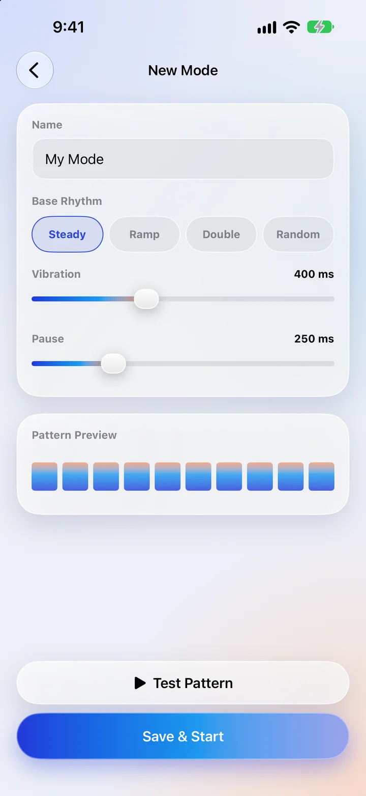

Build your own massage rhythm in PULSE
· 4 min read · Essential Dev Team

PULSE comes with 28 rhythms, but everyone's idea of "just right" is a little different. Maybe you want Steady, only slower. Maybe you want a gentle double-tap with a long rest in between. The custom mode editor lets you build exactly that in under a minute. Custom modes are part of PULSE Pro.
Step 1: Open the editor
On the main screen, scroll to Modes and choose the Mine tab, then tap the Custom tile. The New Mode screen opens.
Step 2: Name it
Give your mode a short name (up to 12 characters) so you'll recognise it later — "Evening", "Calves" or "Slow Wave" all work well. If you skip this, it's simply called "My Mode".
Step 3: Pick a base rhythm
The base rhythm decides how the strength of the beats changes across the pattern:
- Steady — every beat at the same strength. Smooth and predictable.
- Ramp — beats build up in strength, then start again. Feels like a wave.
- Double — two strong beats, then a soft one. A gentle, kneading feel.
- Random — the strength varies from beat to beat, so it never feels mechanical.
Step 4: Set the vibration and the pause
Two sliders shape the timing. Vibration is how long each beat lasts, from 50 to 1000 milliseconds. Pause is the gap between beats, from 0 to 1000 milliseconds. Longer vibrations also make each beat feel a little stronger. The Pattern Preview bars update as you move the sliders, so you can see the shape before you feel it.
Step 5: Test, then save
Tap Test Pattern and hold the phone where you'll use it. Adjust, test again, and when it feels right tap Save & Start. Your mode appears in the Mine tab, where it works just like the built-in ones: Soft, Medium or Hard, the speed slider and the auto-off timer all apply.
Three recipes to try
Slow Wave — for winding down
Base: Ramp · Vibration: about 600 ms · Pause: about 400 ms. Play it on Soft with the speed turned down for a slow, rolling feel.
Knead — for tight shoulders
Base: Double · Vibration: about 250 ms · Pause: about 150 ms. On Medium it feels like quick, gentle pressing.
Rain — for something less predictable
Base: Random · Vibration: about 120 ms · Pause: about 200 ms. Light, scattered taps that are pleasant on the calves or the soles of the feet.
Tidying up
You can make as many custom modes as you like with PULSE Pro. To remove one, go to Settings › My Modes and delete it. Your modes are stored only on your iPhone — nothing is uploaded anywhere.
Not medical advice. PULSE is a relaxation app, not a medical device. This article is general information, not a substitute for professional care. Stop if anything feels uncomfortable, and ask a doctor first if you are pregnant, have a pacemaker or other implanted device, or have a medical condition.